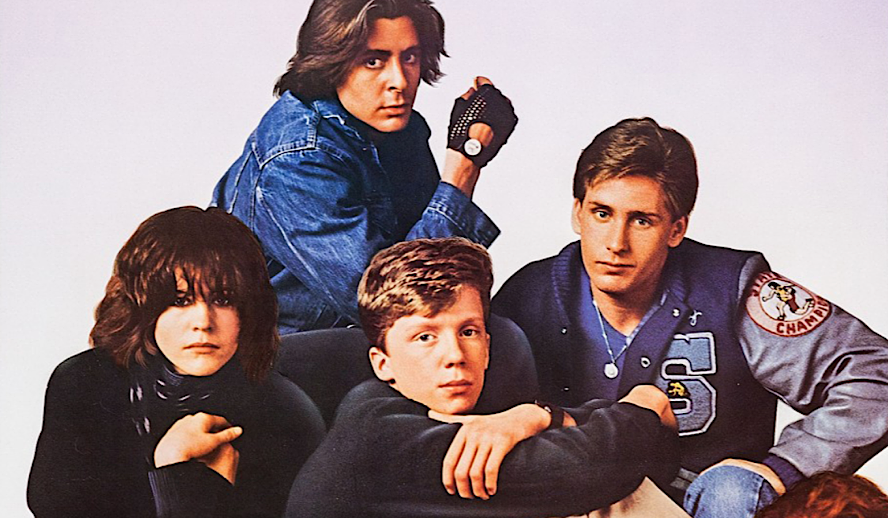
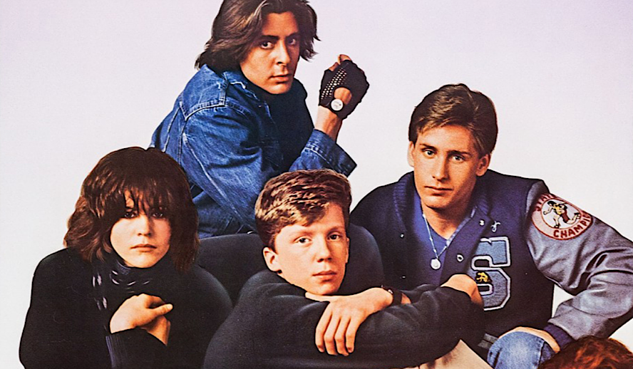
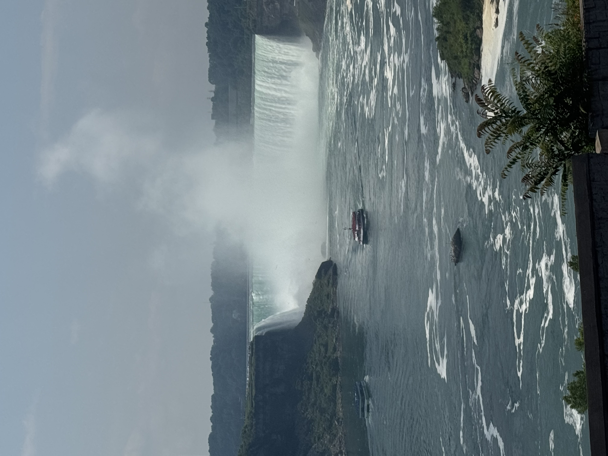
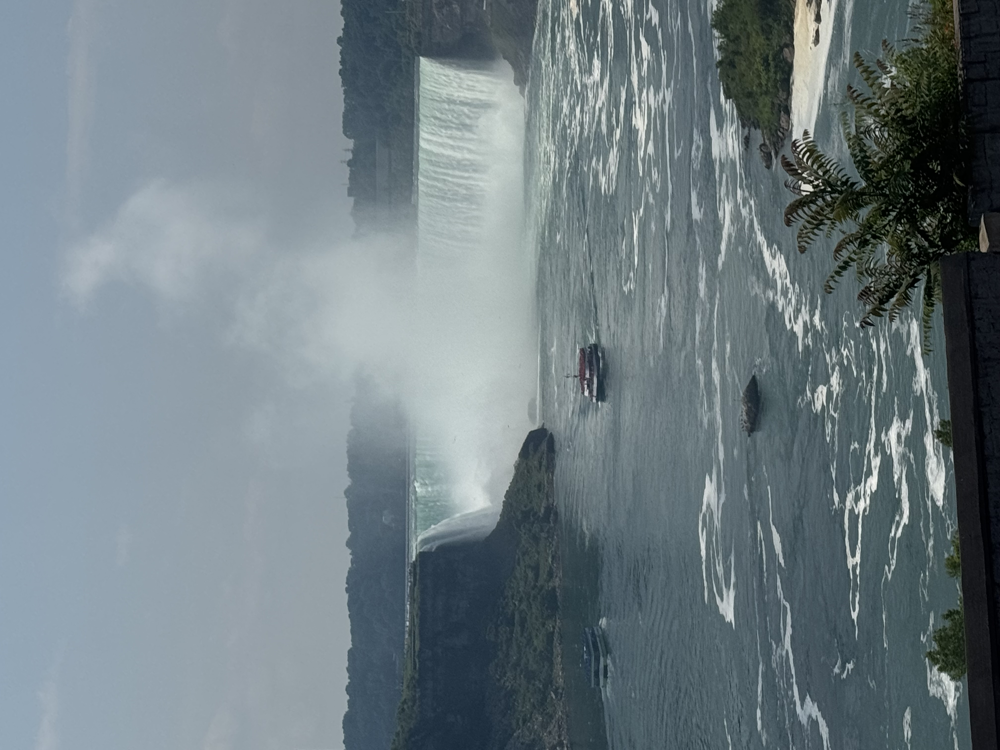

My Hobbies
Golf
I have a long-standing interest in golf and value the focus and discipline the sport requires. I played on my high school's varsity golf team for three years and continue to enjoy the game during the summer months. I initially got into golf because it was something I could do with my dad, but it's become more than that now.
Film and Television
I appreciate storytelling through film and television, both as entertainment and as a reflection of culture. My favorite film is The Breakfast Club, and my favorite television series is How I Met Your Mother, both of which I enjoy for their strong character development and themes of connection.
 


Thrifting
I enjoy thrifting as a creative and sustainable way to discover unique items. It allows me to express individuality while supporting environmentally conscious practices.

Coffee Culture
I take an interest in exploring new coffee shops and seeing new atmospheres. Visiting local cafés has also become a way for me to connect with communities and appreciate small business creativity.

Travel
Traveling is one of my greatest passions. I value the opportunity to experience new cultures, environments, and perspectives through travel. Among the places I have visited, Hawaii stands out as a personal favorite for its natural beauty and welcoming culture.
 
